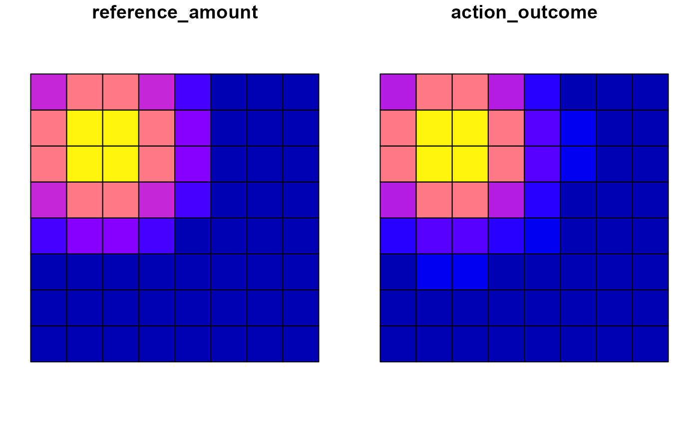

Specify the expected consequences of feasible management actions for feature amounts in planning units, relative to a reference scenario.
Arguments
- x
A
Problemcreated bycreate_problemwith feasible actions already defined byadd_actions.- effects
A data frame with
action,feature, optionalpu, and exactly one ofeffect,outcome, orrelative_change; a named list of action rasters; orNULLto register no effects. Historical formats remain supported.- effect_type
Deprecated interpretation argument:
"delta"for signed changes or"after"for expected amounts. Legacy multipliers retain their original interpretation; omit for modern tables.- effect_aggregation
Deprecated raster aggregation argument; use
raster_aggregationinstead.- component
Deprecated sign filter:
"any"retains all effects,"benefit"keeps positive changes, and"loss"keeps negative changes. These filters do not encode ecological desirability.- raster_aggregation
Aggregate raster values using
"sum"(default) or"mean"for each planning unit.- raster_type
Interpret raster values as signed changes (
"effect", default) or expected amounts ("outcome"). Explicitly provide this orraster_aggregationto select the modern raster interface.
Value
An updated Problem containing dist_effects and
effects_meta; the stored effect table includes reference amounts,
action outcomes, signed effects, and compatibility columns.
Details
Reference amounts, outcomes, and effects
The feature distribution supplied to create_problem() defines the
reference amount \(r_{if}\) of feature \(f\) in planning unit \(i\).
This reference may describe current conditions, existing management, or a
future without intervention. Let \(y_{iaf}\) be the expected amount under
action \(a\). Its signed effect is \(e_{iaf} = y_{iaf} - r_{if}\).
These quantities describe what an action changes, not whether that change
is desirable. For example, increasing habitat may be desirable, whereas
decreasing fuel load may also be desirable. Objectives and constraints
determine how consequences are valued in a planning problem.
Three alternative tabular inputs
Provide action, feature, optionally pu, and exactly
one of the following numeric columns:
effect: signed absolute change \(e_{iaf}\).outcome: expected amount \(y_{iaf}\) under the action.relative_change: proportional change \(c_{iaf}\), with \(y_{iaf} = r_{if}(1+c_{iaf})\) and \(e_{iaf} = r_{if}c_{iaf}\).
For a reference amount of 100, effect = 30,
outcome = 130, and relative_change = 0.30 are equivalent.
Likewise, relative_change = -0.20 represents a 20 percent decrease.
These input columns are alternatives, not values to supply together.
Actions must first be registered with add_actions(). With pu,
effects can vary by location; without it, each action/feature specification
is expanded over feasible planning-unit/action pairs. Locked-out pairs are
excluded. A feature can be identified by name or numeric identifier.
Values must be finite and non-missing; resulting outcomes must be
non-negative. Reference amounts and outcomes must have compatible units
and, when applicable, a common time horizon. Missing reference amounts are
treated as zero: a relative change cannot create a positive outcome from a
zero reference, so use effect or outcome in that case.
Stored representation
Regardless of the input format, dist_effects exposes
reference_amount, action_outcome, and signed effect.
For compatibility, it also retains amount_after (an alias of
action_outcome) and columns named benefit and loss:
these are strictly the positive and negative magnitudes of the signed
change, \(max(e,0)\) and \(max(-e,0)\), not ecological judgements.
A zero effect leaves the outcome equal to the reference amount.
Joint action effects
An action identifier may also refer to a set registered with
add_action_sets(). Supply its total joint effect or outcome,
not merely the interaction increment; individual and joint effects must be
supplied in the same call. In the absence of a specified interaction,
concurrent individual effects are treated as additive. Unspecified terms
are assumed to be zero, which is a modelling assumption. Joint effects and
signed interaction corrections are retained in separate internal tables;
dist_effects represents individual actions. Cardinality constraints
determine whether combinations may be selected.
Raster inputs
Supply a named list of terra::SpatRaster objects, one per action,
each containing one layer per feature in feature-catalogue order. The
problem must contain planning-unit polygons or a planning-unit raster.
Use raster_type = "effect" for signed changes or
raster_type = "outcome" for expected amounts, and choose
raster_aggregation = "sum" or "mean" to aggregate values
within planning units. Ensure the aggregated raster amounts are comparable
with the reference; relative-change rasters are not accepted directly.
Single definition and compatibility
Effects can be specified only once per problem. To compare effect scenarios,
create separate problems from a common object before calling
add_effects(). Historical delta, after,
multiplier, benefit, and loss inputs and explicit
effect_type, effect_aggregation, and component
arguments remain available with deprecation warnings. Use the three
modern tabular columns for new code.
Examples
# EXAMPLE 1: Equivalent ways to describe action effects
#
# Consider two planning units and two features: habitat and fuel load.
# The reference amounts represent their values before implementing
# any management action.
#
# In planning unit 1, habitat = 100 and fuel load = 60.
# In planning unit 2, habitat = 40 and fuel load = 20.
p <- create_problem(
pu = data.frame(id = 1:2, cost = 0),
features = data.frame(id = 1:2, name = c("habitat", "fuel")),
dist_features = data.frame(
pu = c(1, 1, 2, 2), feature = c(1, 2, 1, 2),
amount = c(100, 60, 40, 20)
)
) |>
add_actions(actions = data.frame(id = "restore"))
# Suppose restoration increases habitat in planning unit 1
# from 100 to 130. This response can be described in three
# equivalent ways:
#
# effect = +30 (absolute increase)
# outcome = 130 (amount after restoration)
# relative_change = 0.30 (30% increase)
#
# Each call starts from the same base problem because effects
# can only be defined once per problem.
p_effect <- add_effects(p, data.frame(
pu = 1, action = "restore", feature = "habitat", effect = 30
))
p_outcome <- add_effects(p, data.frame(
pu = 1, action = "restore", feature = "habitat", outcome = 130
))
p_relative <- add_effects(p, data.frame(
pu = 1, action = "restore", feature = "habitat",
relative_change = 0.30
))
# Regardless of the input specification, multiscape stores
# the reference amount, signed effect, and action outcome.
p_effect$data$dist_effects[, c(
"reference_amount", "effect", "action_outcome"
)]
#> reference_amount effect action_outcome
#> 1 100 30 130
# EXAMPLE 2: Effects that apply across planning units
#
# The 'pu' column is optional. When omitted, the specified
# change is applied to every feasible planning unit for
# the corresponding action.
#
# Here, restoration increases habitat by 25% in both units.
# Because their reference amounts differ (100 and 40),
# the resulting absolute effects also differ (+25 and +10).
p_global <- add_effects(p, data.frame(
action = "restore", feature = "habitat",
relative_change = 0.25
))
# Inspect how the same proportional change produces
# different absolute effects across planning units.
p_global$data$dist_effects[, c(
"pu", "reference_amount", "effect"
)]
#> pu reference_amount effect
#> 1 1 100 25
#> 2 2 40 10
# EXAMPLE 3: Positive and negative effects
#
# A management action may simultaneously increase some
# features and decrease others.
#
# Suppose restoration increases habitat from 100 to 130
# but reduces fuel load from 60 to 45 in planning unit 1.
#
# Both responses are represented as signed effects:
#
# habitat: +30
# fuel: -15
#
# Importantly, the sign describes the direction of change,
# not whether that change is desirable. Increasing habitat
# and reducing fuel load may both support management goals.
p_mixed <- add_effects(p, data.frame(
pu = 1, action = "restore",
feature = c("habitat", "fuel"),
effect = c(30, -15)
))
# Inspect the direction and magnitude of each response.
p_mixed$data$dist_effects[, c(
"feature_name", "effect", "action_outcome"
)]
#> feature_name effect action_outcome
#> 1 habitat 30 130
#> 2 fuel -15 45
# EXAMPLE 4: Spatial variation in action outcomes
#
# Use the bundled 64-unit landscape to illustrate how
# reference amounts and action outcomes vary spatially.
# No optimisation or solver is required.
#
# The example applies a hypothetical 25% increase in the
# first feature under the first available action.
if (requireNamespace("sf", quietly = TRUE)) {
# Load the spatial planning units, features, reference
# distributions, and available management actions.
sim <- load_sim_multiaction()
spatial_problem <- create_problem(
pu = sim$planning_units,
features = sim$features,
dist_features = sim$dist_features,
cost = "cost"
) |>
add_actions(sim$actions, cost = sim$action_costs)
# Select one feature and one management action.
f <- sim$features$name[1]
a <- sim$actions$id[1]
# Define a hypothetical 25% increase relative to the
# reference amount in every feasible planning unit.
# Because reference amounts vary spatially, so do the
# resulting absolute effects and action outcomes.
spatial_problem <- add_effects(
spatial_problem,
data.frame(
action = a,
feature = f,
relative_change = 0.25
)
)
# Extract the reference and expected outcome for the
# selected feature-action combination.
vals <- subset(
spatial_problem$data$dist_effects,
action == a & feature_name == f,
select = c("pu", "reference_amount", "action_outcome")
)
# Attach these values to the planning-unit geometries
# so they can be displayed as spatial maps.
mapped <- merge(
sim$planning_units, vals,
by.x = "id", by.y = "pu", all.x = TRUE
)
# Compare reference amounts with potential outcomes.
# These maps represent the consequences of implementing
# the action, not an optimised selection of actions.
plot(mapped[c("reference_amount", "action_outcome")])
}

# EXAMPLE 5: Joint effects of multiple actions
#
# When multiple actions can be implemented together,
# their combined effect need not equal the sum of their
# individual effects.
#
# Consider two actions, 'restore' and 'control'.
# Their individual effects on habitat are +30 and +20.
# However, implementing both together produces a total
# effect of +70 rather than +50.
#
# This implies an additional interaction of +20:
#
# restore effect = +30
# control effect = +20
# additional interaction = +20
# joint total effect = +70
#
# The joint effect is supplied as the TOTAL change,
# not merely the additional interaction.
joint_base <- create_problem(
data.frame(id = 10L, cost = 0),
data.frame(id = 1L, name = "habitat"),
data.frame(pu = 10L, feature = 1L, amount = 100)
) |>
add_actions(
data.frame(id = c("restore", "control")),
cost = 1
) |>
add_action_sets(
list(restore_control = c("restore", "control"))
) |>
add_constraint_action_cardinality(2, "max")
# Supply individual and joint effects in the same call.
# The combined action changes habitat from 100 to 170.
joint <- add_effects(joint_base, data.frame(
action = c("restore", "control", "restore_control"),
feature = "habitat",
effect = c(30, 20, 70)
))
# Inspect the decomposition into individual effects and
# the additional correction associated with joint selection.
# The joint row stores a correction of +20, ensuring that
# the combined total is +70 rather than +90.
joint$data$effect_terms[, c(
"action", "total_effect", "effect"
)]
#> action total_effect effect
#> 1 control 20 20
#> 2 restore 30 30
#> 3 restore_control 70 20